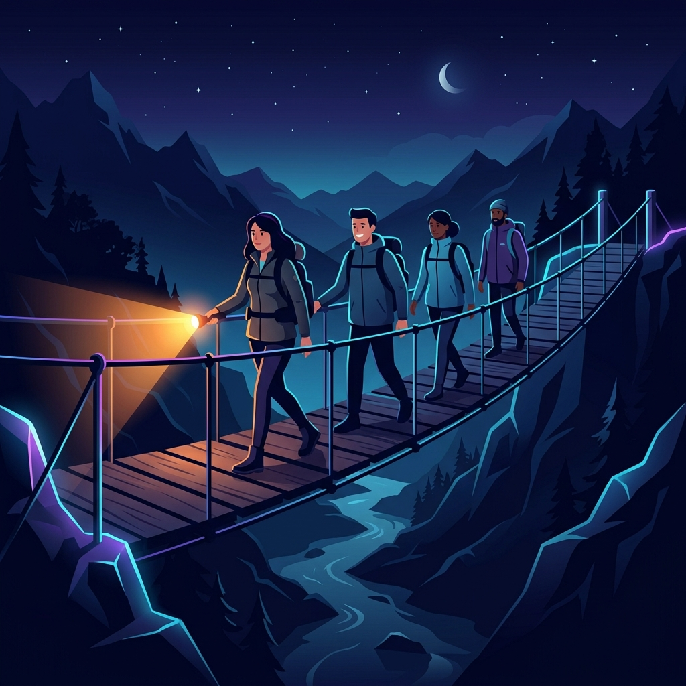

In software development and interview preparation, we often encounter logic-based puzzles that teach us how to write optimal algorithms. One of the most famous examples is the Bridge and Torch Problem (also known as the bridge crossing puzzle). It serves as an excellent way to understand greedy choices and optimization techniques.
Let's translate this puzzle and its optimal solution into plain English using a simple real-world breakdown.

Imagine a group of people standing on one side of a narrow, rickety bridge at night. They all want to cross to the other side, but there are a few rules and constraints:
- Capacity: The bridge is only strong enough to hold a maximum of two people at a time.
- The Flashlight (Torch): It is pitch black, and they only have one flashlight. Anyone crossing the bridge (whether going forward or returning) must carry the flashlight so they don't fall.
- Walking Speed: Different people walk at different speeds. When two people cross the bridge together, they must walk together at the pace of the slower person.
- Returning the Flashlight: Since the flashlight has to be carried back to help the remaining people cross, someone who has already crossed must walk back across the bridge alone to return the flashlight.
The goal is to get everyone across to the other side in the minimum total time possible.
How the Algorithm Finds the Fastest Way
To get everyone across efficiently, the algorithm first sorts the group by their crossing times (fastest to slowest). It then repeatedly uses one of two strategy choices to move the two slowest people across the bridge:
This strategy is ideal when the two slowest people are extremely slow, as they get to cross together so we only pay for the slowest person's time once:
- The two fastest people (let's call them
Speed[0]andSpeed[1]) cross the bridge together. Time: Speed[1] - The fastest person (
Speed[0]) walks back alone with the flashlight. Time: Speed[0] - The two slowest people (let's call them
Speed[n-1]andSpeed[n-2]) cross the bridge together. Time: Speed[n-1] - The second-fastest person (
Speed[1]) who is already on the other side walks back with the flashlight. Time: Speed[1]
Total Time for this round: 2 * Speed[1] + Speed[n-1] + Speed[0]
This strategy is ideal when the fastest person is incredibly fast compared to all others, making them the perfect shuttle courier:
- The fastest person (
Speed[0]) escorts the slowest person (Speed[n-1]) across, then runs back alone with the flashlight. Time: Speed[n-1] + Speed[0] - The fastest person (
Speed[0]) escorts the next slowest person (Speed[n-2]) across, then runs back alone with the flashlight. Time: Speed[n-2] + Speed[0]
Total Time for this round: 2 * Speed[0] + Speed[n-1] + Speed[n-2]
In each round, the code calculates the cost of both strategies, picks the cheaper option, and subtracts those two slowest people from the queue. This is repeated until there are 3 or fewer people remaining, which are handled as simple edge cases.
How This Looks in Java Code
Here is the clean Java implementation of the algorithm described above:
package io.practise.accolite;
import java.util.*;
public class CalculateMinPossibleTime {
public static int calculateMinTime(HashMap<String, Integer> personTimeMap) {
List<Map.Entry<String, Integer>> people = new ArrayList<>(personTimeMap.entrySet());
// Sort people by their individual crossing times
people.sort(Map.Entry.comparingByValue());
int n = people.size();
int totalTime = 0;
// While there are more than 3 people remaining, send the two slowest across
while (n > 3) {
int firstPersonTimer = people.get(0).getValue();
int secondPersonTimer = people.get(1).getValue();
int timeN = people.get(n - 1).getValue();
int timeNMinus1 = people.get(n - 2).getValue();
// Cost of Strategy 1 vs Strategy 2
totalTime += Math.min(
2 * secondPersonTimer + timeN + firstPersonTimer,
2 * firstPersonTimer + timeN + timeNMinus1
);
n -= 2; // Two slowest are now safely across
}
// Handle the remaining 1, 2, or 3 people
if (n == 3) {
totalTime += people.get(0).getValue() + people.get(1).getValue() + people.get(2).getValue();
} else if (n == 2) {
totalTime += people.get(1).getValue();
} else if (n == 1) {
totalTime += people.get(0).getValue();
}
return totalTime;
}
}Conclusion
The Bridge and Torch problem is a classic illustration of how dynamic decisions and mathematically checking multiple greedy strategies lead to an globally optimal solution. Rather than blindly applying one approach, comparing the costs of two different strategies on each iteration ensures we find the absolute minimum crossing time for any distribution of speeds!